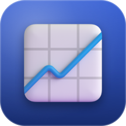
Monitor
2.0Your Mac, live across the whole bar: CPU with a two-minute history as an area chart, network up and down as sparklines, memory and disk as bars, the host name and the time. Polled once a second.
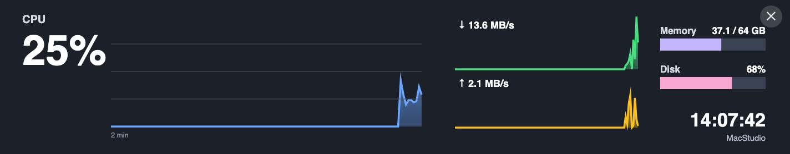
Bar apps · version 2.0 · ship with Deckhand
The CoreBar's own cards are small and static. A bar app takes the full 1424 × 280 screen and refreshes as often as once a second. Since 2.0 every app carries its own page; six fetch their own data and run with the Mac off, five ask the Mac for what only the Mac knows.
How they work
The eleven
Rendered at the bar's real size. The Claude, Calendar and Tasks pictures use demo data.

Your Mac, live across the whole bar: CPU with a two-minute history as an area chart, network up and down as sparklines, memory and disk as bars, the host name and the time. Polled once a second.

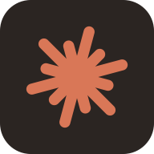
Which terminal needs you. Every Claude Code session on the Mac from the last hour becomes a card with the project, the first prompt and what it last said; the ones waiting for an answer pulse orange, with how long they have waited. Tokens used today in the corner.
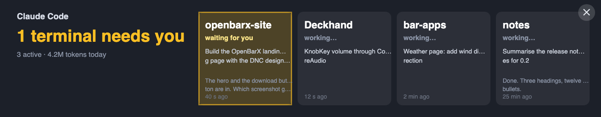
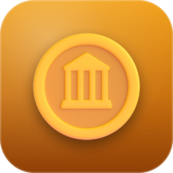
Up to five coins in your currency, each with a sparkline of the day and the change since midnight. Coins and currency are set on the Widgets page; prices come from CoinGecko through the Mac, no API key.
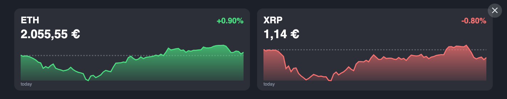
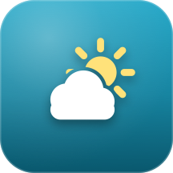
Now plus three days for the Mac's location: condition, temperature, humidity, wind and the chance of rain, from Open-Meteo. Free, no account, no key, unlike the bar's own AccuWeather card.
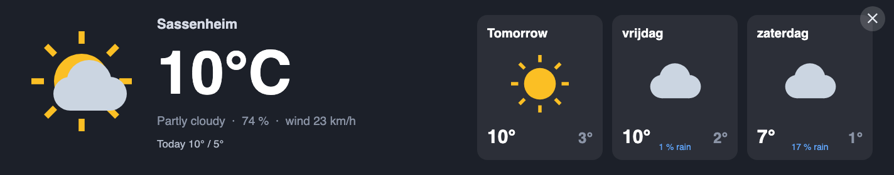
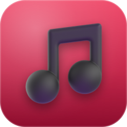
Apple Music with album art, title, artist and album, and a level meter while it plays. Previous, play or pause and next work from the bar's touch screen, through the Mac.
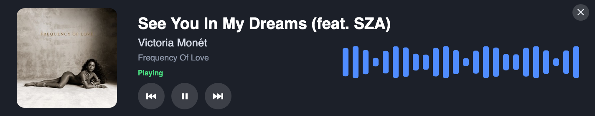
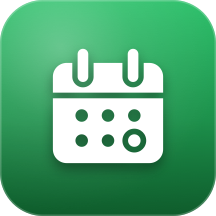
Today, tomorrow and the day after from the Mac's calendars, in the colours you already use. Past events fade; all-day events sit on top. Which calendars show is set on the Widgets page.
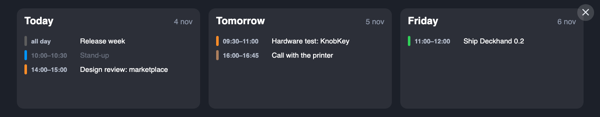
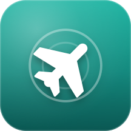
What is flying over right now. On the left a radar on an OpenStreetMap road map, scaled so the circle is exactly the radius you choose (3 km by default, up to 25); beside it up to four flights, each panel in its own colour — green, amber, blue, pink — and the same colour marks that plane and its flight number on the radar: callsign and airline, the route with both airports, altitude and whether it is climbing, speed, type and registration, distance and direction. Other aircraft in the circle are small grey planes. When the circle is empty it says so and shows the nearest aircraft within 25 km. The map tiles are fetched, darkened and cached by the Mac, so the bar needs no internet for them.
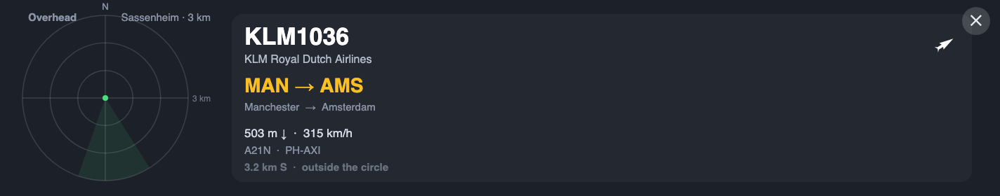
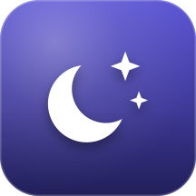
The sun on its arc for today, with sunrise, sunset, solar noon, golden hour, civil dawn and dusk and the day's length; the moon drawn in its real phase, with how much is lit, its age, rise and set, and the dates of the next full and new moon. All computed on the Mac for the weather location.
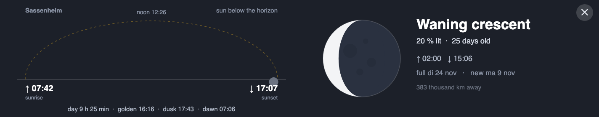
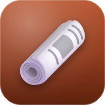
Four headlines at a time, rotating every fifteen seconds through the feed's top stories, with how long ago each was published. CNN by default; BBC World, the New York Times, The Guardian, NOS and NU.nl are a setting away.
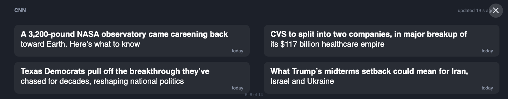
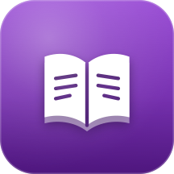
One Bible verse for the day, large and centred, from a list of well-known passages that changes with the date. The World English Bible, which is public domain.
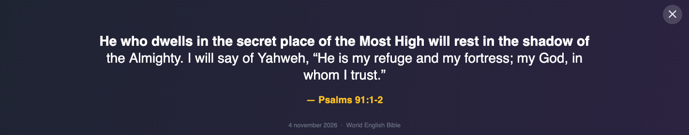
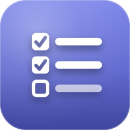
Your open Linear issues: what you have started first, then by priority and due date, each with its state and due day; overdue and due-this-week counts at the top. Tap an issue on the bar and press Done to close it in Linear; the list is refreshed every twenty seconds while the page is open. Needs a personal Linear API key, which Deckhand keeps in a user-only file on the Mac.
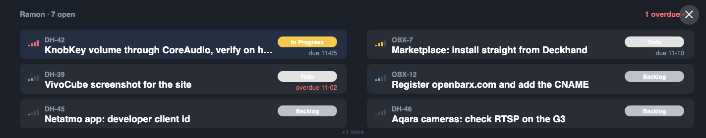
Install
The APKs are inside Deckhand; installing them is the one thing the bar's protocol cannot do, so it goes through Android's debug bridge.
brew install --cask android-platform-tools. Deckhand finds it in the usual places.Note
Monitor, Claude, Music, Calendar and Tasks need Deckhand running on the Mac. Close Deckhand and they show "Waiting for the Mac…" until it is back; the other six carry on.
Build your own
The eleven apps are one Android project with eleven flavors, in the repository under android/DeckhandMonitor. Fork it, or write the same thing in anything that runs on Android.
{"deckhand":"monitor","url":"http://<mac>:7432/monitor","base":"http://<mac>:7432","v":2} every five seconds; base is where its data API answers (the selected bar only). Do what Deckhand's apps do: accept a beacon only when it names its own sender on a private LAN address.finish() through a small JavaScript bridge.